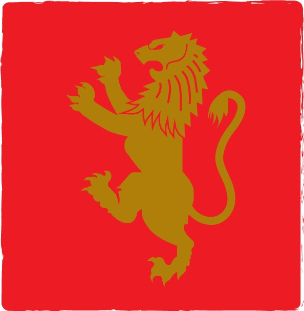
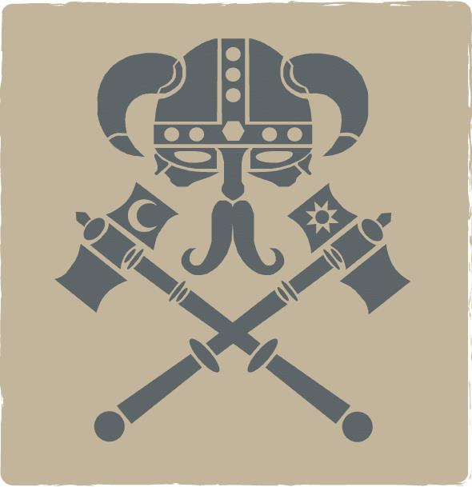
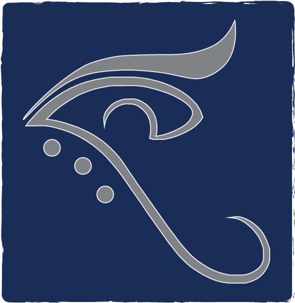
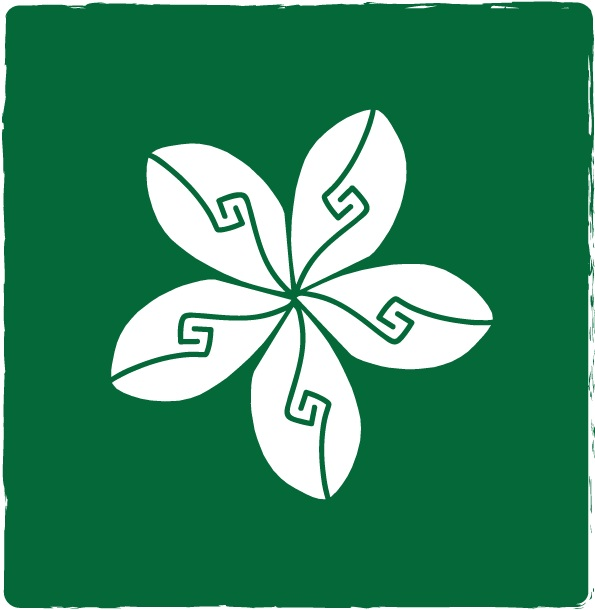

Un’immensa lingua di terra, nascente dalla Catena Montuosa dell’Aquila, circondata dal mare, scende fino all’estremo sud per quasi 11.000 leghe dove il Golfo delle Vergini viene bagnato dal Mar di Prua e si intravedono in lontananza, nei giorni di libeccio, le cosiddette 57 Isole, numero indicativo per la difficoltà di esplorazione e scarsa navigabilità tra esse.
Dall’estremo ovest, bagnato dal Mar dei Limiti, all’estremo est, dove nel Mar di Trabocco trova sfogo il Fiume Smeraldo, intercorrono ben 7.000 leghe che quel fiume divide dopo esser nato dalla catena montuosa; il corso d’acqua, inoltre divide la grande penisola, mettendo in difficoltà i collegamenti tra le due parti in forza della sua grande ampiezza che contrasta con la scarsa profondità e per i suoi affluenti che si diramano in tutto il territorio.
Dalla conformazione varia e misteriosa, con fitti boschi, piccole colline, grandi isole, edifici solitari e persino un grande deserto, rappresenta lo sfondo per il crescere e svilupparsi della vita umana. C’è chi la chiama terra, c’è chi lo chiama mondo, tuttavia negli ultimi tempi, a causa dell’influenza dalle orazioni religiose è stata identificata con il nome di Elaya, dono gentilmente concesso ai suoi figli dalla “Creatrice”, madre di tutti gli esseri viventi.
Questo è stato il più grande credo diffuso tra le genti, anche se non condiviso da tutti, divulgato dai sacerdoti di IMRE, nelle colline di Piano Granito, capitale religiosa dedita alla preghiera e alla contemplazione, una delle 7 Città Stato, giudicate tali per la loro importanza e organizzazione.
Abbiamo FRANCAVILLA, costruita sulle sponde di un piccolo affluente dello Smeraldo, grazie al quale prende il nome l’intera Piana: meta preferita da eruditi, studiosi e artisti che desideravano accrescere la loro conoscenza.
Nel mezzo del mar dei Limiti si estende una delle Grandi Isole, sede di SAZU KAMAR, retta dal suo stimato Gran Visir, capace di stringere importanti accordi commerciali senza mostrarsi mai in volto. Nessuno può dire di conoscere bene la città, neanche i suoi abitanti limitati a vivere nell’estremo sud dell’isola.
Vicino all’Ultimo Passo, ad ovest del fiume Smeraldo, si erge imponente MONTELEONE; ben tre cinta murarie alte e robuste proteggono il suo Signore, oltre che i più abili e preparati guerrieri delle Terre Unite, addestrati nei ranghi delle milizie sin dalla tenera età per arrivare ai più alti ranghi delle stesse.
A 15 giorni di cammino, nei pressi del colle Spada delle Nubi, ai piedi della catena montuosa Fossa di Pietra prende forma ORUD, città d’architettura ricercata quasi ricavata dalla pietra stessa. Si dice che i migliori fabbri con i migliori metalli vivano proprio in quel posto. Quando il sole diventa più caldo si trasforma in teatro per la “Grande Festa”, occasione di divertimento per mercanti, bevitori e festaioli vari.
Più a Sud si estende un bosco tanto fitto quanto avvolto di mistero, con al centro una vera e propria città. Si tratta di FORESTA OMBRA, luogo che tutti conoscono ma di cui nessuno parla.
Infine, nell’estremo sud, sulle rive del mare, si alza un imponente torre, costruzione di spicco di SCOGLIO AMARO, propensa alla navigazione e alla esplorazione dei mari, con locande e bordelli sempre aperti ad avventurieri e marinai. Il suo signore viene chiamato “l’Ammiraglio”, vista la sua dedizione per le navi, le uniche che riescano a navigare tra le 57 isole, di cui per questo si sente padrone.
Una sola strada di pietra, denominata “dell’Uomo”, collega tutte e 7 le città oltrepassando il fiume tramite il Ponte del Cervo, unico passaggio possibile. Piccoli sentieri snodano la via principale in diverse direzioni per raggiungere piccoli borghi e fattorie più o meno importanti.
Sin dalle origini non era cosa facile girovagare per le terre di Elaya: bestie da denti aguzzi, pronte ad assalire all’improvviso, esseri non definibili, deformi e assetati di sangue, rudi briganti pronti a tagliar le gole dei passati pur di accaparrarsi qualche moneta, hanno da sempre reso impossibile percorrere con la garanzia di giungere a destinazione vivi la strada dell’Uomo o i suoi sentieri. I viaggiatori, quindi, iniziarono ad associarsi per intraprendere lunghi viaggi insieme, assoldando talvolta mercenari ed accettando il rischio di essere assassinati da questi stessi a pagamento compiuto.
Per questi motivi furono create le Carovane. Non v’è memoria se qualcuno di preciso le abbia fondate o se si siano semplicemente affermate col tempo prendendo le mosse dalle vecchie consuetudini. Tramite queste, comunque vennero semplificate di molto le comunicazioni tra le 7 città stato, garantendo così la possibilità di viaggiare in maniera più sicura. La cosa indubbia è che nel tempo le carovane divennero un’entità ben organizzata, costituendo dei veri e propri villaggi in movimento con le proprie regole.
2 sono le carovane, e si costituiscono l’una nella zona di Fossa di Pietra, l’altra ai piedi di Piano Granito, e seguendo la Strada dell’Uomo procedono entrambe per le città più importanti, senza mai incontrarsi, cercando di raggiungere in tempo le grandi feste, dove riescono a chiudere i migliori affari. Tuttavia, circa un centinaio di anni fa, a causa di una terribile carestia che colpì Elaya, subirono un grave rallentamento: un vento caldo soffiò, inesorabile per ben 6 mesi mandando in rovina interi raccolti e rendendo ancor più difficile percorrere le lunghe tratte. Con il proseguire di tali eventi, mesi successivi si interruppero del tutto a causa dei violenti temporali e delle continue scosse del suolo che rovinarono le strade, divenute impercorribili dai carretti a ruota. In quei giorni una delle carovane fu addirittura data per dispersa. Poi la situazione si normalizzò, il tempo non era più avverso e i villaggi ambulanti si ricostituirono, ricominciando il loro cammino.
Anche 20 anni orsono entrambe le carovane ebbero qualche difficoltà per via di piccoli gruppi di banditi verdi, orchi rudi e violenti dotati di forza inaudita che le colpirono inesorabilmente. Si dice che la sua cacciata fu merito dei “figli di Monteleone”, ed è a questi momenti che si fa risalire l’istituzione delle Libere Lame, un corpo militare che avrebbe seguito le carovane e vigilato sulla loro sicurezza.
Grazie all’importanza del servizio reso dai capi dei carri, i contatti tra le varie città vennero notevolmente intensificati, favorendo soprattutto gli scambi commerciali; questo fu uno dei motivi che portò alla creazione del Maltagliato, pezzo d’oro, argento o bronzo, del medesimo peso, che ha risolto gli inconvenienti scaturiti dal baratto, successivamente sostituiti da “banconote” vere e proprie, la cui produzione era più agevole e meno costosa.
Questa era Elaya, terra dalle mille sorprese ed alcune certezze, con tanto di detto e poco di scritto, un esiguo passato ma un lungo e florido futuro nelle mani di chi l’ha vissuta prima di essere stato bandito da Talor, colui che da Araldo in terra della Creatrice divenne manifestazione di una Furia Divina incontrollabile.
Le carovane sono, di fatto, villaggi in movimento, dotati di una loro autonomia per permettere la sopravvivenza e l’utilizzo dei servizi essenziali (acquisto di cibo, addestramento militare, istruzione, vendita di beni più o meno rari, produzione di oggetti) tenuto conto che il viaggio, comunque pericoloso, dura circa undici mesi. All’interno delle carovane vige una struttura organizzativa che copre le necessità degli individui, senza tralasciare la difesa del convoglio; le regole e le leggi che regolano la quotidianità delle carovane non sono scritte ma il loro perpetuarsi da centinaia di anni le rende assolutamente conosciute e rispettate.
Queste le cariche di maggiore rilievo:
Il Capo Carovana: È il governatore indiscusso del convoglio; di solito si tratta di un anziano e saggio viaggiatore, o di un vecchio avventuriero che ha preferito la relativa “calma” delle carovane, o di un miliziano stanco della disciplina militare. A lui compete l’organizzazione di ogni aspetto della vita della spedizione e, a tal fine, si serve di consiglieri specifici che consentono di approntare la migliore soluzione per il peggior problema… e di problemi, in undici mesi, ne saltano fuori tanti. L’inefficienza del capo carovana, o di uno dei suoi consiglieri, può portare alla distruzione dell’intero convoglio, cosa che è già avvenuta almeno un paio di volte in passato.
Il Capitano delle Libere Lame: È il delegato alla difesa della carovana, al mantenimento dell’ordine pubblico oltre che all’esecuzione delle sentenze emanate dai pretori. Durante un assalto i suoi poteri si estendono fino a superare quelli del Capo del convoglio, rendendolo, con ciò, la seconda carica più importante, nonostante la sua breve storia. Ai suoi ordini vi è il Luogotenente delle Libere Lame, primo ufficiale, addetto all’esecuzione diretta degli ordini impartiti dal Capitano; nel caso in cui la morte lo colga impreparato, il Luogotenente prenderà il comando delle Libere Lame finché il Capo carovana non eleggerà un nuovo Capitano.
Il Maestro dei Guardacaccia: Esegue gli ordini del Capo carovana in merito alle faccende relative alle esplorazioni, alle staffette e all’approvvigionamento di cibo attraverso la caccia. Ai suoi ordini ha diversi uomini esperti nell’inseguimento e nella cattura di animali selvatici, maestri nelle ricognizioni, abili nel combattimento con armature leggere, daghe, archi e balestre. Secondo in comando è il Cacciatore, un esperto in esplorazioni e caccia, solitamente il più anziano o il più dotato nelle arti tipiche dei Guardacaccia. Di nevralgica importanza per il convoglio, i Guardacaccia si spingono a grande distanza, nonostante i pericoli delle terre selvagge ed inesplorate, per foraggiare gli uomini della carovana e per avvisare nel caso in cui un pericolo dovesse appropinquarsi.
Il Mastro dei Gaffieri: Se c’è qualcosa che debba essere costruito o riparato intervengono i gaffieri coordinati dal Mastro. Si tratta di costruttori, demolitori, geni incompresi, inventori fondamentali per la vita della carovana. Più volte hanno permesso ai convogli di risparmiare giorni di viaggio progettando e costruendo ponti o coordinando le attività di sfoltimento di lunghi corridoi boschivi. Spesso sono naviganti esperti che hanno abbandonato il mare, ex ufficiali di rotta sulle navi dello Scoglio Amaro o esploratori con profonde conoscenze delle rotte battibili e battute dalle carovane. Non di rado si tratta di ex guardacaccia che, ormai divenuti anziani per le esplorazioni, offrono i loro servigi per favorire il percorso delle carovane.
L’Alto Magistrato e la Pretura: Deputata all’amministrazione della legge, la Pretura agisce tramite l’Alto magistrato che coordina le attività dei due Pretori. Il numero dispari di questi giudici è tale per consentire le decisioni collegiali in caso di giudizi promossi nei confronti delle alte cariche della carovana o in determinate tenzoni di notevole rilevanza per il convoglio. Indipendente dagli ordini del Capo Carovana, la Pretura agisce nel rispetto delle regole della sociale convivenza e della buona creanza, avendo cura di mantenere la disciplina morale all’interno del convoglio. All’interno della stessa non sono ammessi fruitori di magia, adepti di culti religiosi o druidi, poiché con le loro arti sarebbero in grado di plasmare e dirigere la volontà degli indagati o testimoni, rendendo così la giustizia un’attività contaminabile o, peggio, corrotta.

Araldica: Ancora con un teschio incastonato e aquila rampante sopra di essa. Bianco su sfondo nero.
A sud, dove la terra trova la fine nell’immensità del Mare di Prua, si erge la città di Scoglio Amaro. A governarla è Fernando R. Malduco dello Smeraldo, detto l'Ammiraglio.
Mura di pietra e malta, alte ben 50 piedi, tagliano l'orizzonte da costa a costa, spezzate solo da un enorme portone d'ingresso, sul quale è intagliato il motto della città: "Al giuramento dato si fa fede o si muore”.
Golfo naturale ove si estendono verso il mare aperto piattaforme galleggianti per l’attracco di galee mercantili. Unica nave da guerra all'interno del porto di Lula è “lo Scoglio di Ghiaccio”, vascello dell'Ammiraglio. Si dice che abbia affondato ogni imbarcazione a lui ostile, proteggendo le sue acque da 150 anni.
Chi entra nella città è inebriato da urla, canti e balli; la sua grande via sembra la foce della Strada dell'Uomo. Allo Scoglio Amaro si possono trovare uomini di ogni tipo. I territori che ne fanno parte sono quelli che si estendono dalle mura fino ad arrivare al mare, e ben oltre...
Leggenda vuole che le navi dell'Ammiraglio siano le uniche in grado di navigare fra le strette isole dell’arcipelago e che quindi queste si assumano essere di suo possesso.
All'interno della Città-Porto si possono incontrare uomini armati con indosso i colori della città. Oltre ad esser abili spadaccini sono ancor più abili marinai, fini nello stile e nel comportamento, che giurano sul mare, al quale chiedono la morte immediata, se mai tradiranno l'oro del proprio Ammiraglio, l’unico oro che toccheranno nella loro vita.
Scoglio Amaro è una città famosa per i suoi bordelli e per il mercato di schiavi; ma anche per le grandi falegnamerie, carpenterie e fucine che danno vita ad ogni nave che si avventuri nelle acque conosciute.
Il popolo è superstizioso all’inverosimile, ama e odia il mare in egual misura, in particolar modo dopo l’inondazione avvenuta circa un secolo fa, per la quale in molti persero case ed in molti persero parenti; ogni anno la ricorrenza di quel giorno porta anche i più temerari a rimanere sulla terra ferma.
Il solo uomo a poter parlare per l'Ammiraglio e, in attesa di un erede maschio, il suo eventuale successore è il Quartiermastro Federico J. ACC Tagliafuoco, il “Contrammiraglio” che gestisce la flotta dei Corsari, ex bucanieri che hanno votato la vita, ed i tributi, all'Ammiraglio Fernando R. Malduco dello Smeraldo; non più nemici della città, costretti alla resa dopo un lungo confronto con il temibile Scoglio di Ghiaccio.
Attualmente si dice che siano impegnati nelle scorrerie del grande arcipelago, autorizzati a rapinare solo navi mercantili e ad uccidere solo in combattimento.
Scoglio Amaro, la capitale, è la città mondana per eccellenza, dove la goliardia regna sovrana e per questo meta molto gradita dai bardi e festaioli di tutto il mondo.

Araldica: Un tronco d'albero secco e nero che giace su una luna argentea con le corna rivolte verso l'alto. Tutto in campo viola.
A sud del grande deserto fino ad arrivare quasi alla foce del fiume Smeraldo si estende la Foresta Ombra, un tempo, si dice, patria di una tribù di antichi esseri detti “Ombre” per la loro preferenza a condurre le proprie esistenze in luoghi poco assolati.
Oggi Falcediluna è il regno di Nuriel Cigno Scuro, suo regno e suo personalissimo parco divertimenti, delle cui origini non vi è traccia nella storia conosciuta, e si dice che solo lui conosca la verità o la leggenda.
Nuriel mandò in giro per le terre i suoi Guardiani al fine di cercare i mercanti più ricchi e gli uomini più potenti, consentendo loro di visitare Falcediluna, instaurando tratte commerciali che solo i Guardiani conoscono e creando relazioni diplomatiche con tutti i potenti; agli uni vendeva manufatti rarissimi, agli altri vendeva la morte dei loro avversari, una morte pulita, perpetrata dai suoi uomini.
Da non sottovalutare infine che la gran parte dei manufatti rarissimi presenti a Scoglio Amaro provengono da Falcediluna.
Al fine di stabilire rapporti ottimali con il suo reggente — e tutelare le navi da assalti di corsari — il Cigno Scuro ha nominato ammiraglio della sua piccola flotta, attraccata stabilmente al Golfo delle Vergini, un uomo proveniente dallo Scoglio Amaro: Avernos C. Tempesta, tenuto comunque sott'occhio da un Guardiano, affinché solo determinate informazioni cadano nelle mani dello scaltro Fernando R. Malduco dello Smeraldo.

Araldica: Leone dorato in campo rosso
A Nord delle Terre Unite, a 20 giorni di cavallo da Ultimo Passo ed a 15 giorni di cammino da Fosso di Pietra si erge, in mezzo al nulla, un colle sulla quale sommità vi è il Palazzo Reale dei Valerius. A governare Monteleone è attualmente Ettore de Valerius detto l'Imperatore.
I "figli di Monteleone" (nome con il quale gli abitanti amano auto-definirsi) hanno origini antiche che si perdono nella storia. Fieri e forti, sono un popolo dedito al combattimento nelle sue accezioni più sublimi e nobili.
La città è attorniata da tre cinta murarie. La più grande è quella perimetrale, alle pendici del colle, le seconda mura si alzano esattamente a metà tra la “Criniera del Leone”, la cinta muraria situata in vetta, e i piedi del colle.
Nell'anello più basso risiede il popolo detto Terza Linea: miliziani e lancieri molto ferrati nella conciatura di pelli e nella caccia, bravi fabbri e, incredibilmente, eccellenti contadini.
Nel secondo anello dimorano la Seconda e Prima Linea di Monteleone: numerosi e abili guerrieri, micidiali opliti, combattenti figli di tempi dimenticati. Vivono tra caserme e stalle e trascorrono le loro giornate tra gli addestramenti ed il vino aromatizzato.
Questi miliziani sono devoti, in tutto e per tutto, al proprio Imperatore, mai difatti discutono un ordine dato; uniti al proprio regno fino alla morte, sperano che essa giunga in battaglia, poiché sarebbe la più onorevole per chi prende il rosso. Una devozione impossibile da capire per coloro i quali non vivono a Monteleone: non è indirizzata al Lord Imperatore, ma verso l’intera famiglia Valerius; ogni successore ne è ritenuto degno.
Nell'ultima cinta — la “Criniera del Leone”, mura lisce, levigate da millenni d'intemperie dimorano le Guardie Scelte dei Valerius, uomini temprati dal tempo e dalle guerre; il loro comandante è Arcae degli Aureli, generale di Monteleone e vice dell'Imperatore, suo successore in mancanza di un erede maschio, famoso per le sue doti belliche e per i suoi lunghi silenzi, impersona l'implacabile giustizia dell'imperatore.
Infine sulla cima del monte vi è la Fortezza dei Valerius circuita dalla Criniera e talmente grande da sembrare, per chi arriva, appoggiata sulle tre cinte di mura; un effetto ottico che da a Monteleone le fattezze di un castello più che di un'intera città.
Su ogni merlo delle mura si ergono centinaia e centinaia di vessilli rossi con il leone dorato che campeggia su tutta la collina.
Unica legge di Monteleone: "Non è tollerato nessun tipo di reato. Ogni malfatto è punito con la morte o con l'esilio". Quasi tutti i nativi optano per la prima affinché avvenga per mano del proprio Imperatore.
Monteleone è Valerius e i Valerius sono Monteleone.

Araldica: Spicchio di luna cavo con al centro un papavero, blu in campo porpora.
A Nordo vest delle terre unite, tra le acque del Mar dei Limiti emerge una delle Grandi Isole, imprigionata tra la sabbia e il mare più profondo e impervio che l'uomo conosca. L'isola è costeggiata per tutto il perimetro da strapiombi di roccia nera; invece, a sud la sabbia dello stretto emerge dall'acqua come se volesse inghiottirla.
Non vi sono mura a proteggerla in quanto solo tramite zattere e piccole galee è possibile l'ingresso a Sazu Kamar e solo il Gran Visir Omar Fathit Tharan Dener Shaza di Luna Cangiante decide chi può entrare e chi può "andare".
La città è un crescendo di vicoli e piccole strade. A nord dell'isola campeggia l'immenso Palazzo del Gran Visir dove una torre centrale si erge su quattro torri minori, tutte sormontate da cupole istoriate di foglie d'oro; le torri sono cesellate da centinaia di finestre simili agli oblò di una galea. Al palazzo ci si può arrivare percorrendo l'unica strada che dalle spiagge giunge sino alle porte del palazzo stesso, ma sono in pochi ad intraprenderla.
Sotto di esso si sviluppa l'intera città. Case basse si inerpicano tra piccole strade e quasi inaccessibili viottoli, dove nemmeno un carro trainato da buoi potrebbe passare. L'intera città è un mercato all'aperto.
L'economia è basata sulla vendita di stoffe, di profumi e del papavero arcobaleno, pianta dalle infinite risorse che solo il Gran Visir sa dove raccogliere e che solo in quest'isola riesce a mettere radici.
Omar Fathit Tharan Dener Shaza di Luna Cangiante è un dittatore riconoscente. Il popolo sa che la metà dei propri guadagni a scadenza giornaliera deve essere versata nelle casse del palazzo, l'altra metà invece resta al popolo, e se mai un tributo venisse rubato, il malfattore verrebbe subito punito.
"Occhio per occhio dente per dente" è la legge applicata sulle ruberie; questo è il solo reato punito all'interno di Sazu Kamar, ogni altra cosa è concessa a meno che non arrechi danno direttamente al Gran Visir; e sono molte le cose che arrecano danno al Gran Visir.
Nessuno lo ha mai visto, sempre appartato all'interno del palazzo insieme alle sei donne. In sua vece gli unici a poter parlare al resto della popolazione sono "I tre Ambrati" che hanno anche l'incarico, una volta l'anno, di scegliere due donne, le più belle, e due uomini, i più forti, per servire il Gran Visir.
La milizia è formata da "mori" che si trovano in ogni anfratto e cunicolo della città, come fossero statue immobili, giorno e notte. Un aspetto rende perfette queste guardie: sono morbosamente devoti al Gran Visir.

Araldica: Martelli da guerra incrociati con un elmo cornuto sopra di essa, in campo sabbia.
A nord est del mondo, il monte Spada delle Nubi scende inesorabile verso la pianura, a chiudere l'intera catena montuosa dell'Aquila. Alle sue pendici si erge Fossa di Pietra, conosciuta ai più come l'Invalicabile o l'Invisibile, governata da Agarat del Martello Bianco detto "Pelo Nero".
Una fila di mura sottili come foglie, ma resistenti come il ferro, racchiude tutte le abitazioni del loco fino a perdersi tra le rocce. All'occhio umano solo il fumo domina tal cittadina. Il portale d'ingresso è individuabile solo ad un palmo dal proprio naso, e per lo più il naso va a sbatterci prima di vederlo, addentrati in quella nebbia fievole e perenne.
Superato il portone, un lungo e ampio corridoio buio divide Fossa di Pietra in due zone distinte e separate. A destra le taverne, le abitazioni ed il mercato, zona più frequentata al calar del sole dove gli abitanti mangiano, dormono e bevono, ingannando il tempo libero, prima di una nuova giornata. A sinistra, invece, abbondano grosse fucine sempre fumanti e profonde cave di ferro e pietra, la zona più popolata e viva della città.
Il popolo di Agarat è incredibilmente dedito al lavoro: gli uomini sono appassionati minatori, abili gioiellieri ed ancor più eccelsi fabbri, mentre le donne, possenti e forzute, mantengono le forge accese quando gli uomini, calato il sole, si rinchiudono in taverna per bere e scherzare. Nella maggior parte delle Terre Unite è anche famosa per la sua birra: unica birra che si paga il doppio poiché nessuno riesce a berne il doppio degli abitanti di Fossa di Pietra — o comunque così raccontano locandieri e mercanti.
Agarat Pelo Nero è un uomo opulento, dalla "grande pancia" e con il boccale sempre a portata di mano. Sino al calar del sole è l'uomo più burbero ed introverso della città, ma quando la luna sta per fare il suo ingresso nel cielo diventa tutt'altra persona, somigliante più ad un oste che ad un reggente.
Alle pendici di Spada delle Nubi sorge la "Casa" di Agarat. Non è un castello né una piccola fortezza, ma una semplice casa in pietra che sembra scaturire direttamente dalla pancia dell'alto monte. Peculiare è il fatto che qui non è preferito l'utilizzo del "maltagliato" ma le merci della cittadine vengono acquistate dai forestieri tramite il baratto; ne sono un esempio le quattro galee, attraccate nel mar di Trabocco, frutto degli scambi commerciali con Scoglio Amaro.
Persona di spicco è Rontar Volpe Bianca, primo consigliere di Pelo Nero, coordinatore dei lavori nelle fucine, responsabile degli introiti cittadini; secondo solo ad Agarat, nonchè suo successore sino all'arrivo di un erede maschio.
La milizia è comandata da Tolosh Grande Maglio ed è formata da uomini rudi e duri, dai rozzi metodi di combattimento ma sempre efficaci, dotati di armi forgiate dai migliori fabbri delle terre conosciute e di armature così forti da non piegarsi al martello di un orco.
Con l'arrivo della calda stagione viene indicato un giorno per la Grande Festa, unica occasione dove il maltagliato viene sempre accettato e la birra aumenta il suo prezzo. È per questo evento che arrivano a Fossa di Pietra i migliori mercanti, bevitori e festaioli della terra. Perfino gli abitanti del loco interrompono, per l'intera giornata, tutti i compiti lavorativi. Diversi giochi, spettacoli ed intrattenimenti vedono protagonista anche Agarat del Martello Bianco. Nello stesso periodo è proprio in questa zona che si riforma la carovana.

Araldica: Un occhio argentato su sfondo blu[cite: 6].
A sud del Bosco delle Furie e ad est del fiume Smeraldo vi è una discreta zona collinare sulla quale, nelle cime più alte, posa una città dalle possenti mura e costruzioni che, per la loro maestosità, si intravedono dalla pianura[cite: 6]. Imre è l'unica città in cui è celebrato, in maniera ufficiale, un culto religioso; l'unica divinità venerata è stata identificata, negli ultimi decenni, col nome di "Creatrice", madre di tutti i viventi, e dell'intera Elaya, cioè tutte le terre e i mari esistenti[cite: 6].
Il governatore della città non è un re ma il rappresentante per eccellenza della Creatrice, cui tutti gli abitanti sono devoti, e la cui parola è legge: Talor, detto "Illuminato", Clerus Maximo, custode e ideatore delle Sacre Scritture[cite: 6]. La corte sua è formata unicamente da sacerdoti di alto rango, Cardini Maximi e Cardini Minor, che amministrano, insieme al Clerus Maximo, Piano Granito e che nominano in caso di vacanza del Clerus Maximo, la suddetta carica[cite: 6].
La città è costituita da un villaggio di case in legno che si è sviluppato nel tempo attorno alla granitica cattedrale, sede ed abitazione del clero e dell'armata[cite: 6]. L'economia si basa sulle tasse ecclesiastiche che, nel caso dei suoi abitanti, consiste nella donazione del trenta percento del proprio lavoro, in soldi o in materia prima; mentre per gli stranieri in visita, consiste in un dazio monetario da versare alla guardia cittadina al momento dell'ingresso[cite: 6].
Le forze armate di Piano Granito si suddividono principalmente in due tipi: la Guardia Cittadina e la Guardia Templare[cite: 6]. Entrambi i corpi sono formati da fedeli che hanno deciso di votare la propria esistenza alla protezione della divinità, presente in terra nella figura del Clero ed in particolare del Clerus Maximo[cite: 6]. La Guardia Cittadina, forte della propria fede, e la Guardia Templare, costituita da un'élite di combattenti, vedono le loro fatiche alleviate dal favore divino ottenuto dalla preghiera[cite: 6]. I bardi delle taverne narrano che l'Armata Splendente, così chiamato l'esercito di Piano Granito, "porti la luce nella notte più buia", ma nessuno sa cosa cosa ciò voglia dire, anche perché l'Armata Splendente non è mai scesa in battaglia a memoria d'uomo[cite: 6].
Dopo la carestia di cento anni fa si dice che il clero, e la religione stessa, siano stati traditi da un gruppo di sacerdoti, chiamati i Rinnegati, che hanno trovato fortuna e sostentamento volgendo la propria fede, la propria anima ed i propri corpi a qualcos altro che si è manifestato, forse una nuova divinità ed il cui nome permea gli incubi peggiori: l'Empia[cite: 6].
Piano Granito intrattiene rapporti favorevoli con Piana Smeraldo, la cui scienza è molto apprezzata, in quanto il clero stesso ammira i suoi studiosi e uomini di diatribe che cercano di carpire la vera conoscenza[cite: 6]. La legge della città è molto tollerante, sebbene venga punito qualsivoglia atto dannoso nei confronti del prossimo; nella maggior parte dei casi la punizione consiste in frustate o giorni di prigione volti a far pentire il condannato del proprio gesto, mentre per i fedeli dell'Empia l'unica pena plausibile è la morte per aver insultato la Creatrice[cite: 6].
Negli ultimi anni con l'arrivo del freddo viene celebrata una delle grandi feste di Elaya: la Festa della Creazione[cite: 6]. In questa circostanza il Clerus Maximo parla non solo alla sua popolazione, ma a tutti i cittadini che con la carovana giungono in citta[cite: 6]. Durante la festa viene data la possibilità, a coloro i quali non sono cittadini di Piano Granito, di abbracciare il credo della Creatrice[cite: 6]. Talor fu la prima persona a dare un nome alla divinità e cercare di diffondere il culto in tutta Elaya[cite: 6]. Coloro che lo vorranno, potranno partecipare ad una tenzone, un torneo d'Armi durante il quale i semplici cittadini potranno tentare di divenire parte dell'esercito di Piano Granito o semplicemente vincere il premio messo in palio dai Cardini[cite: 6]. Durante la festa della Creazione si avrà altresì occasione di partecipare ad un rito celebrato direttamente dal Clerus Maximo, nel corso del quale i più meritevoli membri della Guardia Cittadina vengono nominate Guardie Templari[cite: 6]. Da ricordare che, come ogni anno, in questo periodo si fermerà la carovana per poi ricostituirsi tempo dopo[cite: 6].

Araldica: Margherita bianca in campo verde[cite: 7].
Francavilla si trova alla foce del Fiume Palude, dove muore nello Stretto di Sabbia[cite: 7]. È un vero e proprio luogo di pace ed armonia nel quale chiunque può recarsi per intraprendere gli studi della terra, della medicina e di ogni cosa che accomuni l'uomo alla conoscenza e sapienza nelle sue accezioni più alte[cite: 7]. Non è attorniata né da cinta murarie né da alcun tipo di difesa[cite: 7]. Grandi campi coltivati fan da contorno alle ville e case che formano Piana Smeraldo, in assoluto la zona più fertile dell'intera penisola; qui germogliano e crescono tutti i tipi di piante e arbusti conosciuti anche con clima avverso grazie a delle geniali coperture che ne assicurano la giusta temperatura, ad eccezion fatta per il papavero arcobaleno[cite: 7].
Il tempo l'ha affermata per le sue biblioteche, le sue piccole scuole e i suoi centri artistici[cite: 7]. A reggere la città e le sue conoscenze è la famiglia dei Villici, di cui Ludovico è il progenitore[cite: 7]. I Villici non hanno mai condiviso i loro studi segreti con anima viva, eccezion fatta per i propri figli che, per questi motivi e per la loro lungimiranza, sono sempre subentrati ai loro padri nella "direzione" di questa peculiare città[cite: 7].
Attualmente è Corrado II de' Villici il Signore, anche se il popolo e la sua corte amano chiamarlo il Maestro[cite: 7]. Egli, a differenza dei suoi predecessori, ama circondarsi all'interno della sua villa di gente facoltosa, letterati, artisti, cerusici e alchimisti[cite: 7]. Chiunque voglia frequentare le scuole di Piana Smeraldo può farlo liberamente, versando un salario a scadenze varie nelle casse della citta, poiché questi, oltre all'agricoltura e alla vendita dei prodotti alchemici, sono gli unici introiti di Francavilla, centro nevralgico della Piana[cite: 7].
Corrado II difficilmente si interessa delle questioni giuridiche o amministrative del proprio territorio, lasciando questi compiti al cugino Fernando de' Villici ugualmente rispettato ed ascoltato; considerato, durante i viaggi del Maestro, il Signore di Piana Smeraldo[cite: 7]. Viaggi sempre più frequenti alla ricerca della massima conoscenza, durante i quali il Maestro è seguito dal suo fedele servitore, il Muto, incontrato in una delle prime uscite[cite: 7]. Nessuno ne conosce il nome o il tono della voce[cite: 7].
Ultimamente però i suoi giorni nella villa sono cambiati radicalmente e le sue escursioni sono cessate, nonostante l'età sarebbe quella giusta per toccare i punti più remoti di Elaya[cite: 7]. Niente lezioni di spicco per gli studiosi della Piana, niente diatribe con gli eccelsi venuti da altre città, niente lavori nel suo campo privato[cite: 7]. Autore già di diversi tomi sull'alchimia e medicina, si impegnò ad accrescere la sua fama iniziando la sua opera più grande, ancora incompiuta e attesa dai maggiori letterati della Penisola[cite: 7]. Forse è stato questo che lo ha allontanato dalla vita mondana ed ha reso più evidenti i segni dello scorrere del tempo[cite: 7].
Francavilla non ha una milizia: tutto è lasciato al caso e alla pace[cite: 7]. D'altronde chi si sognerebbe mai di attaccare un popolo di contadini[cite: 7]?
Nelle Terre Unite vi sono luoghi liberi non governati da signori, non retti da lord, non assoggettati a nessuna legge. Alcuni di questi sono particolari accozzaglie di unioni fra uomini e altro, altri invece sembrano più antichi degli inferi, in ogni caso non sono come le grandi 7 Città Stato. Più piccoli per numero e con organizzazioni diverse, sono i pochi luoghi conosciuti oltre quest'ultime.
BOSCO DELLE FURIE
..una donna, bella come la luna piena, promise la sua mano ed un albero d'argento al valoroso che fosse riuscito a liberarla dalla stretta maledizione che la teneva legata per i capelli all'arbusto. Si precipitarono, all'allora Bosco di Mezzo, tre capitani di ventura con le loro fratellanze armate. Biruk il Triste, a capo della Fratellanza dell'Orso Bruno, Rastak il Troll, a capo della Fratellanza del Gufo e Paride l'Esiliato, a capo della Confraternita del Leone. Il primo rimase estasiato dall'albero completamente d'argento e tentò di salirci sopra per vedere quanto fosse alto ma arrivato in cima cadde, morendo sul colpo. Rastak il Troll pensò che l'unico modo di avere l'albero fosse staccare letteralmente il corpo della donna dallo stesso e quando impennò la spada per colpirla, un ramo, staccatosi, lo schiacciò di netto. Quando gli armigeri delle 2 fratellanze, ormai senza un capo, stavano iniziando a spazientirsi, ululando grida di virilità su chi dovesse diventarlo, silenzioso e sicuro si fece spazio tra la folla Paride, che si avvicinò alla donna e la baciò intensamente. Lentamente i capelli della fanciulla incominciarono a sciogliersi dall'albero e quando ne fu completamente libera, esordì: "Mio eroe, da oggi la mia vita e quest'albero sono tue per i secoli a seguire". L'esiliato sfoggiò un ghigno sfottente, sfoderò la spada e le staccò con un singolo con colpo la testa di netto. Il sangue che si riversò sulla sua lama la tramutò interamente in argento finissimo e tagliente. Gli Orso Bruno e i Gufo, visto ciò, inneggiarono con grida di vittoria all'esiliato che promise ad ogni suo uomo un pezzo dell'albero. Non c'erano altro da aggiungere, da quel momento tutti si inginocchiarono e giurarono insieme: "Per l'argento e la Vittoria noi siamo tuoi, e combatteremo per te e per i tuoi..."
Remar Bardo delle Furie
PONTE DEL CERVO
Tra i due grandi Boschi, quello delle Furie e quello dell'Ombra, si erge maestoso, nel punto più breve tra sponda e sponda del Fiume Smeraldo, il Ponte del Cervo. A discapito del nome, questa è una vera e propria fortezza sulla quale base ha inizio un ponte enorme chiuso alle due estremità da grandi cancelli di ferro. La fortezza è retta da un piccolo drappello di arcieri, balestrieri e picchieri, probabilmente mercenari, dei quali si è sempre proclamato sire Guiscardo di Valle d'Argento. Il Ponte è l'unico passo sicuro per passare da un lato all'altro dello Smeraldo. Ma questo non avviene in favore e cortesia. Chiunque voglia passare deve pagare un pedaggio, che consiste in 5 tagli di bronzo a uomo, 15 a carro e 10 per cavaliere.
Guiscardo, che tutti conoscono come "il Parassita", accetta anche beni di qualsivoglia fattura ma dei quali è l'unico a deciderne il valore.
Chi entra dal primo cancello si inerpica in un enorme corridoio illuminato da torce dove non vi sono finestre o fessure ma, dal soffitto, quando il sole è alto, entrano fievoli raggi di luce.
Il nome del Cervo a questo Ponte è dato dal fatto che, colui che riscuote personalmente il tributo del passaggio, ogni volta che qualcuno attraversa, sia esso un contadino o un Signore delle 7, saluta dicendo: "il Passaggio è vostro e ricordate: per un esercito il peso in argento di un Cervo è dovuto". Sulla fortezza del Ponte si ergono vessilli lucenti sui quali un cervo bruca un campo di tagli d'argento su sfondo bianco.
Un particolare è che la famiglia Valle d'Argento ha il brutto gusto di mettere ad ogni figlio il nome Guiscardo e per questo da sempre è Guiscardo di Valle d'Argento ad avere il Passo sotto di sé.
CASTELTAURO
Tra Piano Granito e il Fiume Smeraldo si erge maestoso Casteltauro. Questo Castello ormai decadente sembra apparso da una terra lontana. Le mura sono completamente bianche. Cinque torrioni, a formare una stella, sono uniti tra loro da lunghe mura, alte più di quelle di Fossa di Pietra o dello Scoglio Amaro. Un fossato profondo di acqua torbida e putrida lo attornia per intero. Nessuno è mai entrato al suo interno. Periodicamente il ponte levatoio si abbassa ed un uomo su un sauro bianco si reca a Ponte del Cervo, entrando senza essere accolto da nessuno e facendo rientro a Casteltauro in giornata.
Qualcuno dice che lì vi dimora un Vecchio Re, suddito di sé stesso, un uomo antico come la terra.
Tralasciando le leggende, l'unica cosa certa di Casteltauro è il suo vessillo, che sventola alto e logoro su tutti e cinque i torrioni: un toro nero con due tagli d'argento al posto degli occhi in campo bianco.